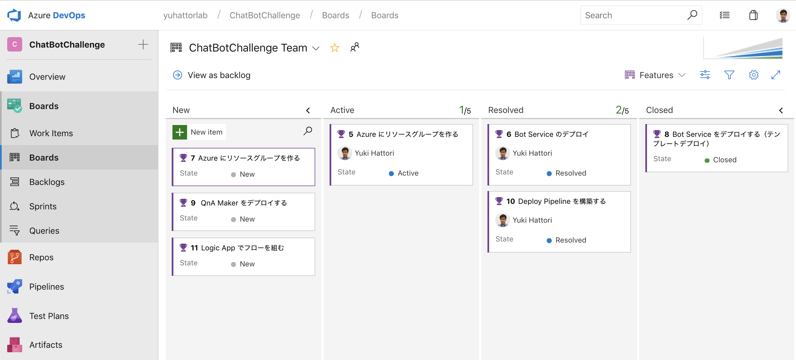

class: center, middle # Microsoft Hackathon Program Azure AppDev TSP --- ### Azure アーキテクチャデザイン チャレンジ #### Day 1 Agenda - Azure ファンダメンタル (60) - アーキテクチャセッション の ターゲットコンポーネント (30) - 要件定義 / アーキテクチャデザイン (45) - アーキテクチャ発表、レビュー(30) - Azure DevOps の説明/構築(15) - Azure 構築チャレンジ (120) --- class: center, middle ### Azure ファンダメンタル (60) --- class: center, middle ### アーキテクチャ コンポーネンツ(30) --- ### 要件定義 / アーキテクチャデザイン (45) --- class: center, middle ### アーキテクチャ発表、レビュー(30) --- class: center, middle ### Azure DevOps の説明/構築(15) --- ### Azure 構築チャレンジ (120) - Web App Bot をデプロイする - QnA Maker をデプロイする - Bot Service と QnA Maker をつなげる - Logic App でリクエストデータを登録する - リソースグループに RBAC の権限をつける - Application Insights をデプロイしてログを監視する - Application の Web View を HTML で作成 - CI/CD のパイプラインを構築する - CI/CD パイプラインに、Approver を追加 - ビルドを走らせ、無事リリースできることを確認 --- 